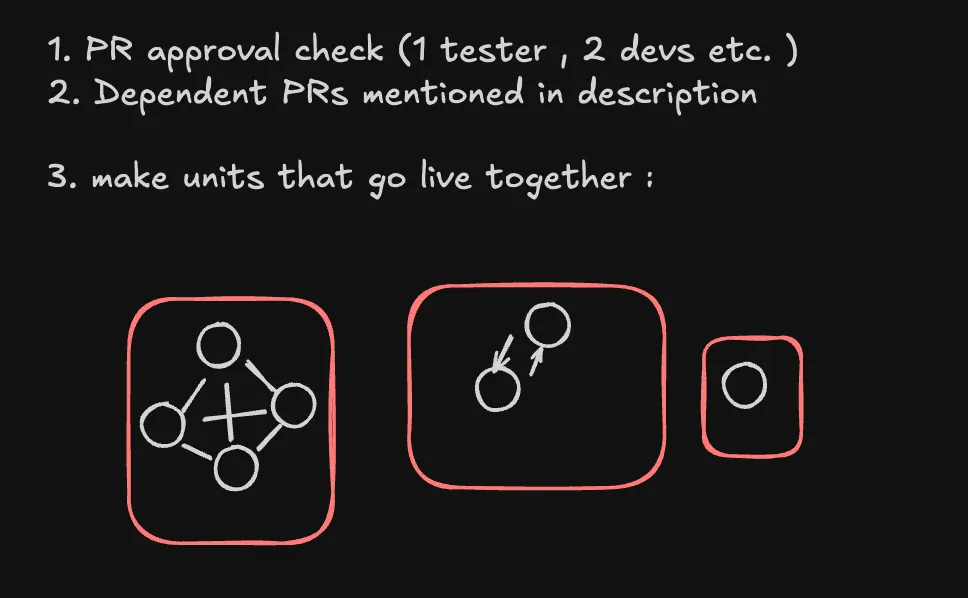

Building a cost-effective CI pipeline at Rocketium
ci github devops
Hey everyone. This post walks through how I implemented a cost-effective CI pipeline at Rocketium: the context behind the need, the choices we made, and how the integration side actually works.
Aim of the CI pipeline
We are a team of around 15 devs, shipping code on an almost daily basis. As the product grows, it gets harder for someone to manually check:
- The PRs ready to go live
- Whether a live PR has any dependent PR that needs to go live with it
- New conflicts that arise in a ready-to-go PR due to a recent merge
- Status across multiple test suites
And then finally deciding whether the build can go live or not. Note that many times we might want to go ahead with deployment even if tests fail. With those things in mind, we wanted a quick pipeline that can handle all these cases, and also give enough visibility and control over the whole integration process.
Why not choose available existing tools
Common tools that come to mind for such tasks are Mergify, Aviator, GitHub merge queues, Jenkins, and possibly many more around the web. Most of them cost around $15–20 per seat per month, which is quite high if you don’t have a very complex CI workflow. Another point: even integrating them might not solve all the cases we want, the way we want.
Hence it was finally decided to build an in-house service that would power Continuous Integration at Rocketium. Let’s move on to how the CI pipeline actually functions.
CI service
The CI part is handled with a Node.js service that runs on scheduled times triggered via GitHub Actions. Hence no need to host the code continuously — only the GitHub Action run, which takes around 1–2 minutes.
The merge process we follow is: first we evaluate which PRs are ready to go live. Those ready get merged to a patch branch. A downstream PR is then created from patch to main with changes from all the PRs. The patch branch is deployed to staging. If all test suites pass, we can safely merge the PR to main.
Overall design for the service
Controllers/
AppController
Services/
ConfigurationService
DependencyAnalysisService
DownstreamPrService
GithubApiService
LoggerService
PRMergeService
ReportGenerationService
RepoScannerService
SlackNotificationService
Utils/
DependencyParser
GraphUtils
Models/
ConnectedComponents
PRDataOrchestration at the controller
this.logger.info("Starting CI automation scan and merge");
// 1. Validate configuration
const validationResult = this.configService.validateConfiguration();
if (!validationResult.isValid) {
const errorMessage = `Configuration validation failed: ${validationResult.errors.join(', ')}`;
this.logger.error(errorMessage);
throw new Error(errorMessage);
}
// 2. Initialize GitHub API service
const githubToken = this.configService.getGitHubToken();
const githubWriteToken = this.configService.getGitHubWriteToken();
this.githubApiService.initialize(githubToken);
this.githubApiService.initializeWriteOperations(githubWriteToken);
// 3. Scan repositories
this.logger.info("Phase 1: Scanning repositories for PRs");
const allPRs = await this.scannerService.scanRepositories();
// 4. Analyze dependencies
this.logger.info("Phase 2: Analyzing PR dependencies");
const analysisResult = this.analysisService.analyzeComponents(allPRs);
// 5. Execute merges for ready components
this.logger.info("Phase 3: Executing merges for ready components");
const mergeResult = await this.mergeService.mergeReadyComponents(
analysisResult.connectedComponents
);
// Check for critical failure
if (mergeResult.criticalFailure) {
this.logger.error("Critical failure detected during merge process");
this.logger.info("Sending critical failure alert to Slack");
await this.slackService.sendCriticalFailureAlert(
mergeResult.criticalFailure.failedPR,
mergeResult.criticalFailure.componentSize,
mergeResult.criticalFailure.reason
);
const scanReport = this.reportService.generateReport(analysisResult, allPRs);
const criticalFailureReport = `\n\n **CRITICAL FAILURE** \n` +
`PR ${mergeResult.criticalFailure.failedPR.repo}#${mergeResult.criticalFailure.failedPR.number} failed to merge.\n` +
`This PR is part of a component with ${mergeResult.criticalFailure.componentSize} PRs.\n` +
`Reason: ${mergeResult.criticalFailure.reason}\n` +
`Process stopped at: ${mergeResult.criticalFailure.timestamp}`;
return `${scanReport}${criticalFailureReport}\n\n${mergeResult.summary}\n`;
}
// 6. Generate comprehensive report
this.logger.info("Phase 4: Generating comprehensive report");
const scanReport = this.reportService.generateReport(analysisResult, allPRs);
const fullReport = `${scanReport}\n\n${mergeResult.summary}`;
// 7. Send Slack notification with merge results
this.logger.info("Phase 5: Sending Slack notification");
await this.slackService.sendScanResults(analysisResult, allPRs, mergeResult);
// 8. Create downstream PRs (patch -> main) if PRs were merged successfully
this.logger.info("Phase 6: Creating downstream PRs");
const mergedPRs = this.extractMergedPRs(mergeResult);
const downstreamResult = await this.downstreamPRService.createDownstreamPRs(mergedPRs, false);
const finalReport = `${fullReport}\n\n${downstreamResult.summary}`;
this.logger.info("CI automation scan and merge completed successfully");
return finalReport;Going through each phase one by one.
Configuration and GitHub services initialization
This sets up and validates the basic setup config, like:
- how many and which repos do we have to consider
- what is the target branch (like we want to merge those targeted to
patch) - what is the minimum approval count required
- do we have all necessary tokens
In the first two steps we are just configuring and validating basic things: min approval count is not set to 0 by mistake, read or write tokens are not empty, etc. Then we initialize Octokit for GitHub operations via the GitHub services.
Scan repos
After all initialization is done we scan all repos and gather data for all the PRs targeted to patch, and enrich it.
const prData: PRData = {
number: pr.number,
title: pr.title,
url: pr.html_url,
mergeable,
mergeStateStatus: pr.merge_state_status || 'UNKNOWN',
author: { login: pr.user?.login || 'unknown' },
createdAt: pr.created_at,
labels: pr.labels.map((label: any) => ({ name: label.name })),
approvalCount,
repo,
baseBranch: pr.base.ref,
body: pr.body || '',
dependencies
};
A crucial step here is that we also add a dependencies array, which later helps us decide what PRs can be merged. This can be a case where one PR is ready, tested, and approved, but a PR in another repo that it depends on is not ready to be merged — in that case we have to skip even the ready PR. To form the dependency array we extract the depends on keyword from the PR body. Now this becomes the developers’ responsibility: add depends on [PR No] in the PR description so we can manage it in CI.
Analyzing components
Dependencies play an important role in deciding what gets merged. To manage this easily, we first form a graph out of the data we collected.

By making a graph we have all the components ready with us that should go live together. Getting all connected components of a graph is a standard DSA problem with fairly straightforward code.
For example:
- PR A in repo X depends on PR B in repo Y
- PR B in repo Y depends on PR A in repo X
- PR C in repo X is not dependent on anything
Then we will have formed two connected components:
- C1 → [PR A, PR B]
- C2 → [PR C]
Once we have these components, it is fairly simple to decide that if all PRs in a component are ready to go live, then we can merge that component to patch.
Merging ready components
Even after an initial check on what is ready to go live, with our approach three kinds of cases may arise while merging:
- Every component gets merged properly one after the other.
- While merging PRs of a component we can encounter a new conflict because of previous PRs we just merged. But if this PR does not have any dependencies, and is a single PR in its component, we can skip it for now and move on to try merging other components.
- If there is a merge conflict and the component had multiple PRs, then we call it a critical failure and stop the whole process altogether. Why? Say a component had two PRs, one backend and one frontend: if the backend one got merged and the frontend one fails due to a merge conflict, we cannot move forward with deployment until the frontend PR also gets merged or we revert the backend one, since they are dependent on each other.
Handling the critical failure case
In the case of critical failure as discussed above, we do two things:
- First we add a label to the PR on GitHub, so that we skip processing it next time until the developer removes it and the issue is solved.
- Second we send a Slack alert so the team knows about the situation.
Creating the downstream PR
If no critical failure happened, we make the downstream PR from patch to main, and then send a detailed summary over a Slack channel highlighting total PRs, which were ready to merge, what the connected components were, and which components got merged and are part of the downstream PR now.
That covers the CI merge flow: scanning, dependency analysis via connected components, merging ready units to patch, and opening the downstream PR to main.